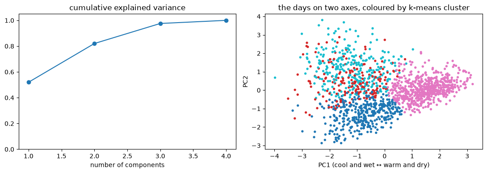

Practice tasks covered
- Practice 1 – K-means, Gaussian mixtures (EM) and hierarchical clustering to group days into weather types
- Practice 2 – principal component analysis (PCA)
- The algorithms never see the weather label or tomorrow's rain; they only get four numbers per day.
- K-means and EM for a Gaussian mixture are both written from scratch in about 15 lines.
- There is no sharp number of clusters (silhouette 0.37 at k = 4, BIC keeps falling), so k = 4 is chosen to be readable.

| Cluster | Days | Average high | Wind | Rainy days |
|---|---|---|---|---|
| Warm and dry | 597 | 23.7 °C | 2.8 | 16% |
| Mild and rainy | 289 | 12.9 °C | 4.1 | 100% |
| Windy and mild | 197 | 11.2 °C | 5.3 | 56% |
| Cold and calm | 378 | 10.5 °C | 2.2 | 34% |
The clusters are meaningful: the warm and dry cluster is mostly days the dataset labels as sun (414 of 597), and the rainy cluster has no sunny days at all, yet the labels were never used.
Run the code
K-means from scratch, then PCA. This is real Python running in your browser. Edit it and press Run. The first run takes a little while to load Python.
week_3.pyPython · runs in your browser